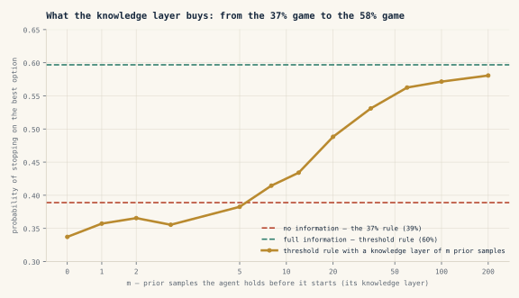
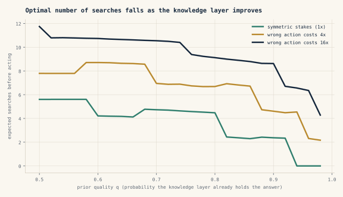
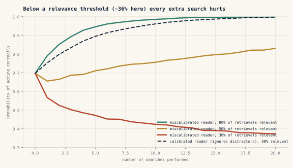
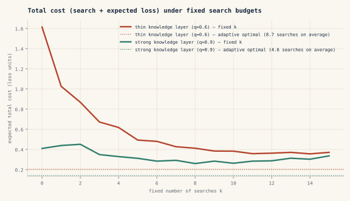

I have started reading agent traces the way I used to read expense reports.
A trace is the log of what an agent did on the way to an answer. Most people scan one for the moment it went wrong. I have begun scanning for something duller: the number of times it went looking. Fourteen retrievals for a question the operator two desks over answers from memory. Nine calls to establish which version of a policy is current. Six to confirm a fact that was in the first document it opened.
Not one of those steps is a mistake. Each is a sensible thing to do when you do not know. But read them together and they stop looking like reasoning and start looking like an invoice — and the invoice is itemised.
execute_tool under the OpenTelemetry GenAI conventions, span type tool in Opik — so this view is computable from telemetry you are probably already emitting.Every search an agent makes is a line item for something the organisation already knew and failed to hand over.
That framing arrived on a Sunday morning, from a book rather than a system. The first chapter of Brian Christian and Tom Griffiths’ Algorithms to Live By is about optimal stopping — the secretary problem, the 37% rule, when to stop looking for a flat or a parking space. I had read it before. What caught me this time was a sentence I had skated over: the best possible strategy still fails most of the time, and it is still the best possible strategy. You examine the first thirty-seven per cent of your options without committing, then take the first one that beats them all. You end up with the best option about thirty-seven per cent of the time. Nobody can do better — not for want of cleverness, but because you must decide before you find out.
What prompted this“Optimal Stopping: When to Stop Looking”Brian Christian & Tom Griffiths, Algorithms to Live By: The Computer Science of Human Decisions (Henry Holt, 2016), chapter 1.Which is the position every agent is in when it decides it has enough context. The answer has not arrived. It will not arrive until after the decision. I spent the rest of that morning in a rabbit hole, and this is what was at the bottom of it.
When to stop searching has been a solved problem since the 1940s. What is not solved is why deployed agents get it wrong in both directions. Because the stopping point is not a property of the model’s intelligence — it is a property of the prior, the knowledge layer underneath. An agent cannot know it has enough context; nothing can, before the result. What it can know is which game it is in, and that was decided by what you gave it. Search volume is therefore a measurement, not a capability: the tax paid for the gaps. And past a relevance threshold I can put a number on, each further search makes the agent not slower but wrong.
01 · SignalA Solved Problem That Keeps Failing
Very little of the underlying idea is mine, and that matters for what follows.
In 1945 Abraham Wald showed that a test which decides as it goes — stop when the evidence is decisive, continue when it is not — needs roughly half the samples of one that fixes its sample size in advance. In 1991 Stuart Russell and Eric Wefald formalised the instinct for reasoning systems: compute only while the expected improvement to your decision exceeds what the computation costs. Herbert Simon had published the humbler version in 1956. Satisfice, do not optimise.
So my one-line note to myself that morning — intelligence is not knowing how to search, it is knowing when further search is worth less than acting on what you already know — was not an insight. It was a definition, and an old one. The question worth asking is why systems far more capable than anything Wald imagined still get this wrong in production. They stop too early and answer fluently from a thin context. Or they never stop, and bill you fourteen retrievals for a two-line answer.
Gary Klein spent years watching fireground commanders and nurses decide under pressure, and found that the experienced ones did not search more carefully than novices. They searched less. They recognised the situation, retrieved a workable response, and moved — because their prior did the work a novice’s search had to do. A novice’s decision log looks like an ungrounded agent’s tool trace.
Experts do not search better than novices. They search less, because they start from somewhere.
02 · The Rabbit HoleHow Does an Agent Know It Is Enough?
An agent has retrieved four documents. Should it fetch a fifth? It cannot check whether the answer is right, because deciding before the answer arrives is the whole job. It cannot ask how confident it feels, for reasons I will come to. So on what basis does anything — person or machine — conclude it has enough?
The secretary problem is the cleanest version of that predicament anyone has written down. Options arrive one at a time, you accept or reject on the spot with no going back, you know nothing about the distribution of what is coming, and you learn whether you chose well only after you have stopped choosing.
The 37% rule is not really a rule about when to stop. It is a rule about how to learn what good looks like when you begin with nothing. The look phase produces no decision and no value. It exists to build a distribution you were not given — a third of everything you have, spent on calibration.
Now change one thing. Suppose each option arrives with a readable percentile, because the population is already known to you — what the literature calls full information. The look phase disappears entirely. The rule becomes a threshold that relaxes as options run out: demand the 96th percentile early, accept the 50th when one remains. You may take the very first candidate. Your odds of ending with the best rise from about 37% to about 58%.
The 37% rule is not about when to stop. It is about how to learn what good looks like when you were handed nothing. The knowledge layer is what you were handed.
Nothing about the searcher changed. What changed is prior knowledge of the distribution — and in an enterprise that has a name. A blank window plays the no-information game and burns a third of its budget discovering what a relevant document looks like here. A grounded agent plays the full-information game and recognises enough when it sees it.
I should say plainly where that stops being a proof and becomes an analogy, because it does. The secretary problem is about picking the best from a sequence of candidates; an agent gathering context is accumulating evidence, which is a different mathematical object. What transfers is not the 37% figure. What transfers is the structural claim — that prior knowledge of the distribution is what converts an expensive exploratory rule into a cheap threshold rule — and that claim is worth testing rather than asserting. So I tested it in the setting where it is exactly true, to see the shape.

The curve did something I had not predicted. A thin knowledge layer is worse than none at all: an agent holding three examples treats them as the distribution, sets its threshold against a fiction, and stops at the wrong moment more often than one that admits it knows nothing and looks first. Confidence arrives before competence does.
Which resolves a contradiction you may already have spotted. If searches measure the gaps, more knowledge should always mean fewer searches — yet here a little is worse than none. Both hold, because they measure different things: a partial layer reduces the number of searches while degrading the quality of the stop. The dangerous state is not ignorance. It is the half-built knowledge layer that has taught the agent to feel grounded.
So the answer was not the one I went looking for. An agent cannot know it has enough — nothing can, in advance of the result. That is a theorem, not a limitation of the technology, and no model release repeals it. Enough is not a feeling the agent has or a number it reports. It is a threshold, and a threshold is meaningless without a distribution to set it against. You supply the distribution.
An agent cannot know it has enough. It can only know which game it is playing — and you decided that before it started.
03 · MeaningThe Stopping Point Belongs to the Prior
The secretary problem says which game you are in. Decision theory says how many moves to make inside it — and it gives the measurement. The number of searches an agent needs is a direct readout of what the knowledge layer failed to contain.
I have argued before that the value of a deployed system converges to the quality of the knowledge layer beneath it rather than the model within it. I did not expect that to reappear inside a stopping rule. I have called the cost of losing judgement between sessions the Amnesia Tax; this is the same tax, paid per tool call, and unlike the other one it is already itemised in a log you are keeping.
Building it forced three corrections I would not have reached by thinking.
Do not ask the model whether it is sure
The obvious implementation of “stop when confident” is to ask. You get a number between zero and one, and that number is close to noise. Models are badly calibrated about their own uncertainty, and the failure is not random: they are most confident exactly when context is thin and the answer is a fluent reconstruction of the typical case. A stopping rule built on introspection stops earliest where it should stop last.
What works is behavioural and observable from outside the model. Did the last retrieval change the answer? If the answer has held for two searches, the well is dry. Did the last retrieval bring anything the agent had not already seen? If the documents are restatements, the search is telling you to stop. Neither takes the model’s word for anything, and both can be logged, replayed, and shown to somebody who does not trust it.
The stakes move the threshold — which makes the autonomy dial a real object
“Worth less than acting” conceals an asymmetry. Delaying a payment and wrongly releasing one are not the same size of error. Raising a trade-document discrepancy that proves commercially meaningless costs a day; waving through one that turns out to be a customs exposure on a preferential-origin corridor costs considerably more. The point at which an agent stops and acts has to move with the cost of being wrong.
A note on examples: they are drawn from public rulebooks and how the industry works in general, not from any institution I have worked with. The point is the shape of the judgement, which is common to every bank running these corridors.
I have written before about autonomy as a dial rather than a switch, without being able to say what the dial physically is. It is the stopping threshold. Low autonomy searches more and escalates while still uncertain; high autonomy acts on the prior. Same agent, same knowledge layer, different stakes, different total on the receipt — and an engineer can implement that number while an auditor inspects it.
Past a threshold, search makes the agent worse
This is the correction I did not see coming. The intuition is that over-search is merely wasteful — more tokens, more latency, the same answer eventually. It is not. Retrieval does not return noise. It returns plausible things: the company with the similar name, the policy version superseded in 2021 and never pulled from the index, the near-miss case sharing every keyword and pointing somewhere else. An agent taking those at face value is not being slowed down. It is being steered.
04 · ExperimentI Built It to Find Out Whether I Was Right
All of the above is the kind of argument that sounds true in a keynote and might not survive a spreadsheet. So I wrote the spreadsheet. It is open source, in two layers: simulations that establish the shape exactly, and a harness that tests whether real models behave the way the shape predicts.
Take the layers in order. The simulation asks what an optimal agent would do, so that we know what to compare a real one against.

An agent whose prior is right ninety-five per cent of the time should search zero times when errors are cheap, and six or seven times when a wrong action costs sixteen times a delay. Identical agent, identical knowledge. Only the stakes moved, and they moved the entire curve.

This is the figure I most wanted and least expected. If retrieval returned random noise, more search would always help eventually, because noise averages out. But similarity search returns whatever most resembles the question, and in an enterprise corpus that is very often the wrong version of the right document. Model the distractors honestly and a clean threshold appears: when less than roughly a third of what comes back is genuinely relevant, a trusting reader gets worse with every step and keeps getting worse. Twenty searches in, it is likelier to be wrong than before it started.
An agent that does not know when to stop is not slow. It is wrong, and it paid extra to be wrong.
A calibrated reader never has this problem, and what separates the two is not search capability. It is knowing enough already to notice when a document contradicts you.

Most deployed agents run a fixed retrieval budget: top-k documents, n steps, then answer. No fixed budget comes close to an adaptive rule, and it does not much matter which budget you choose — a fixed budget cannot stop early when the evidence agrees, or keep going when it conflicts. Wald established this in 1945. We have re-implemented the fixed-sample test at scale and called it a pipeline.
A simulation proves a shape, not a fact about language models — which is what the second layer is for. Its synthetic world exists for one reason: to make coverage a dial. Public benchmarks fix it at zero, handing the agent nothing and making it find everything. Enterprises live in the middle, and the middle is the whole argument.
The predictions are published before the results, because that is the only honest order. Behavioural rules will match exhaustive search’s accuracy at well under half the searches, at every coverage level. Searches under an adaptive rule will fall roughly in line with coverage. The confidence rule will stop too early where context is thinnest and be the least stable across models. And with distractors in the index, exhaustive search will not be the most accurate policy for at least one model. The results table lives in the repository. If the predictions fail, they stay on the page with the numbers beside them.
05Where I Could Be Wrong
Three objections deserve better than a footnote.
Search is getting cheap enough that none of this matters. Latency is falling and context is abundant; if search were free the optimal policy would be to search everything. But Fig. 5 is the answer: past the relevance threshold the cost of search is not the tokens, it is the answer. Free search into a corpus that is a third relevant is a free way to become confidently wrong. Cheapness makes stopping more important, because it removes the one brake that used to halt agents at a sensible point by accident.
Models are getting better calibrated, so introspection will start to work. Perhaps. I would still not build on it, for the reason I would not build an audit function on the auditee’s self-assessment. A behavioural rule is inspectable by someone who does not trust the model, and that someone is the regulator.
A strong prior is only an asset if it is right. This one cuts against my whole argument. A knowledge layer that is confident and stale produces an agent that stops immediately and acts on last year’s answer — call it confident staleness, the Amnesia Tax’s quieter twin. Everything above assumes the layer is at least as reliable as what search would find. Where it is not, the correct policy is more search, and the honest reading of the receipt is not “the knowledge layer has gaps” but “the knowledge layer is wrong.” The instrument cannot tell those apart. Only somebody who still knows the answer can, which is why a knowledge layer has to stay attached to people who can say that was true in 2023.
06 · ActionStart Monday
None of this needs a new model. It needs you to read a log you are already keeping as a bill you did not know you were paying.
Everything above reduces to one operational act: sorting each decision your agents make into a class, and giving each class a stopping rule and a threshold. Three classes cover almost everything. Sort your steps into them and the rest of this is implementation.
| Class | Stop on | Act at | Still uncertain → | What you log |
|---|---|---|---|---|
| Cheap to reversea wrong call costs minutes | the prior | ~85% | act, and correct later | searches, answer |
| Costly to reversea wrong call costs a day | answer‑stability | ~95% | keep searching to budget, then escalate | every retrieval, what changed the answer |
| Irreversible or regulatedmoney moves, or a regulator can ask why | a person | n/a | the agent assembles evidence; the human decides | the full trace, and what was withheld |
“Already keeping” is meant literally. A retrieval is a span like any other: under the OpenTelemetry GenAI conventions it is execute_tool, named for the tool it called; in Opik it is a span of type tool nested under the trace. Counting them per task needs no new instrumentation and no schema of mine — the repository ships a reader that takes an Opik export, an OTLP file, or a live Opik project and prints the receipt: retrievals per task, accuracy banded by how much search was spent, and the queries your agents keep repeating. That last list is the useful one. It is the shortlist of facts to promote into the knowledge layer, ranked by what they are costing you.
- Put searches-per-task on the dashboard. Beside accuracy and latency, the count of
execute_toolspans per task, tracked by task type over time. It is the cheapest measurement of knowledge-layer quality available to you, and almost nobody reports it. - Stop on behaviour, not belief. Replace “stop when the model is confident” with “stop when the answer has stopped moving” or “stop when retrieval has stopped adding.” Both are loggable and defensible to somebody who does not trust the model.
- Make the autonomy dial a number. Define it as a stopping threshold per action class. Cheap-to-reverse actions act on the prior; expensive-to-reverse actions search further and escalate while uncertain. Write the thresholds down — they are the policy.
- Promote what gets searched. Read the receipt monthly. Whatever the agents keep going back to fetch belongs in the knowledge layer. Each promotion lowers the tax on every task that follows.
- Give the agent its look phase in advance — and finish it. A few dozen worked examples of what a relevant, current, decision-grade document looks like for the task, supplied up front rather than discovered per query, is what moves an agent into the better game. Do not stop at three: a half-built layer is worse than none, and it will feel like progress while it happens.
The operator two desks over is not smarter than the agent with fourteen retrievals. She was given something it was not, and it let her stop before she started. That is the argument. The rest is the receipt.
Intelligence was never knowing how to search. It was starting from somewhere — because where you start decides which game you are playing. The trace tells you how far from somewhere you are.
- The chapter that started this — Christian & Griffiths, “Optimal Stopping: When to Stop Looking”, ch. 1 of Algorithms to Live By (Henry Holt, 2016); the full-information result is Gilbert & Mosteller, “Recognizing the maximum of a sequence”, JASA 61 (1966)
- Sequential tests need about half the samples of fixed ones — Wald, Sequential Analysis (1945)
- Rational metareasoning and the value of computation — Russell & Wefald, Do the Right Thing (MIT Press, 1991); “Principles of metareasoning”, Artificial Intelligence 49 (1991)
- Satisficing — Simon, “Rational choice and the structure of the environment”, Psychological Review 63 (1956)
- Experts search less — Klein, Sources of Power: How People Make Decisions (MIT Press, 1998)
- Irrelevant context degrades model answers — Shi et al., “Large language models can be easily distracted by irrelevant context” (2023); Liu et al., “Lost in the middle” (2023)
- The build — The Search Tax on GitHub (MIT): simulations, harness, pre-registered predictions, results table
The Curious Mind’s Guide to Agentic AI — the mechanism underneath this essay: the knowledge layer, the orchestration harness, and the trust discipline, rebuilt from first principles in seven illustrated parts.
One brief, when there is something worth your time — on agentic AI, governance, and the operating model for systems institutions can actually trust.